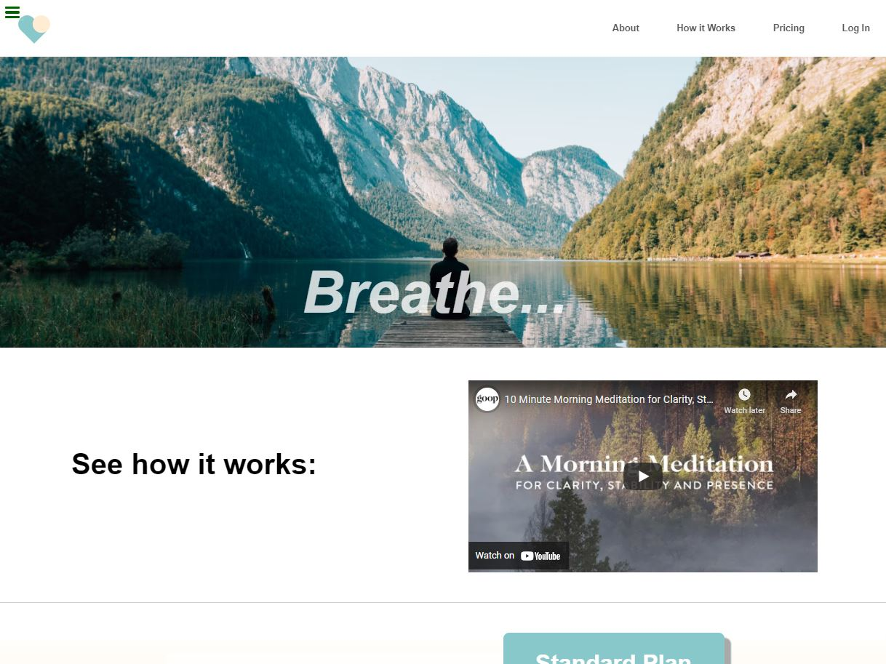
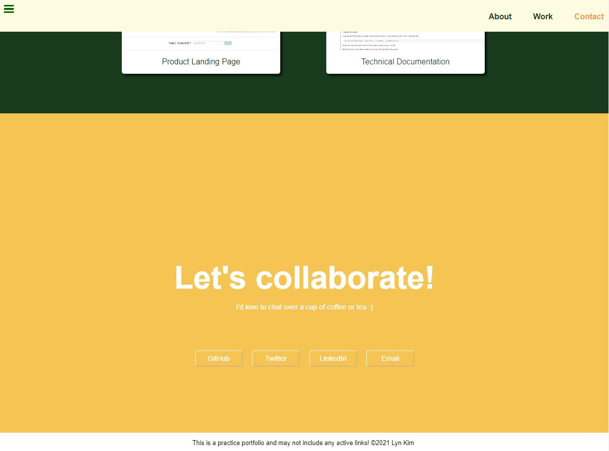
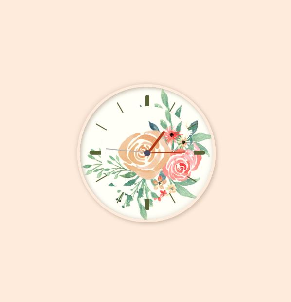

Lyn Kim
LYN KIM
ABOUT ME
I’m an Urban Designer turned sprouting software engineer who’s currently based in sunny California. From Seoul to Chicago to now LA, my life in the metropolis and passion for design and the outdoors steered me down a path to pursue a degree in Landscape Architecture.
During my 6 years in the AEC (architecture, engineering, and construction) industry, my experience designing and engineering artful and intuitive built environments sparked an immense curiosity for me to learn how to do the same for digital landscapes as a developer. The two paths share a great deal of similarity – transforming a vision in my head into tangible, beautiful products through a process of concept design to technical documentation and construction – that resonated deeply with me.
In the midst of a years-long career change debate with myself, and stifled by the fear of failure and leaving a career that I was excelling in (yet exhausted by), I underwent a major, unexpected surgery in February 2021 that stemmed from a health complication with no clear diagnosis or treatment options. This was a very difficult reality for me to process but it also pushed me to truly start advocating for myself; to never take my health for granted; to be bold, and to go after the what-if’s to live a life without regrets.
So in August 2021, I finally quit what I once believed was my dream career at a renown firm and started my passion project of learning how to code during my recovery. And it’s been an incredible journey so far. I’m thrilled to be a beginner at something again, to constantly learn, create, break and make new things every day. Thanks to coding, my passion and drive for creativity that had faded long ago has now been restored. I can’t wait to keep exercising the design and problem-solving abilities that I’ve cultivated throughout my previous career in the world of development!
TECHNOLOGIES
MY PROJECTS
  CONTACT ME
Find more of my work on GitHub